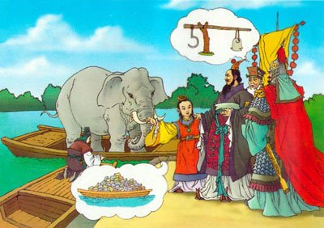

高陵一号墓墓主的第四种推测：曹冲
2010.6.19 （星期六 ）《文汇报》学林版
考古学专家自从把河南省安阳市安丰乡2号墓确定为“曹操高陵”以来，由于2号墓旁边的小墓——1号墓——暂停发掘，对于1号墓墓主究竟是谁的问题，至今已做出多种推测，归纳起来，主要有以下三种：
（一）曹昂说。考古学专家普遍认为，该墓可能是曹操的大儿子曹昂的。这种推测的理由是：曹昂在一次大战中战死，连遗骨都没有留下，而1号墓在今年年初打开后，没有发现骨架，很可能是个衣冠冢。
（二）爱妃说。有专家认为，1号墓地可能是曹操爱妃的墓室。理由是，如果1号墓地是曹昂的墓葬，父子地位不一样，该墓地不应该与曹操高陵在同一水平线上，只能在曹操墓的前或后的位置。
（三）大臣或爱将说。也有人根据1号墓地曾经发掘出一把铁剑做了推测，怀疑1号墓或许是一个兵器冢。对此，多数专家持否定态度。有专家认为，尽管1号墓与2号墓相比小了近一半，砖头也小得多，结构也不够坚固，以致年久发生坍塌，但毕竟没有必要建个兵器冢。因此，有人认为1号墓可能是个大臣或爱将的坟茔。
从文献学的角度考察，1号墓的墓主除了上述三种可能之外，我认为绝不能排除第四种可能：曹冲。
曹冲（196-208），字仓舒，是曹操特别疼爱的儿子。（《三国志·魏书·武文世王公传》曹冲传云：“太祖数对群臣称述，有欲传后意。年十三，建安十三年疾病，太祖亲请为请命。及亡，哀甚，文帝宽喻太祖，太祖曰：‘此我之不幸，而汝曹之幸也。’言则流涕。为娉甄氏亡女合葬，赠骑都尉印绶。”对于“此我之不幸，而汝曹之幸也”一句，何焯的评论是：“仓舒之死，正在军败赤壁之年，故尤愤不择言。”我认为，何焯之说未必得实。何氏所谓“军败赤壁”之事发生在这一年的冬季，仓舒则死于夏五月；而夏五月又正是曹操得意之时，他当时正准备“置丞相”并自任丞相，然后南征刘表、东征孙权，一统天下，代汉为帝。）据《三国志·魏书·武文世王公传》可知，他生于建安元年；参考曹丕《苍舒诔》可知，他病死于建安十三年五月甲戌，即西元208年6月20日；葬于六月乙酉，即西元7月1日；当时的葬地，大约在邺城的城隅。到了曹丕称帝的第二年，也就是黄初二年八月丙午——西元221年9月12日，追赠曹冲为“邓哀公”，并“迁葬于高陵”。（策文中的“高陵”是不是指曹操的墓地，清代学者钱大昭的意见是否定的，他在《三国志辨疑》卷一中说：“此高陵非冯翊属县也。《魏志》诸侯王墓亦称‘陵’，曹子建诗‘逝惭陵墓’及此称‘高陵’是也。”近人卢弼不同意钱说，他在《三国志集解》卷二十中驳云：“高陵，魏武之陵也。以仓舒为魏武爱子，故迁葬高陵。钱说误。”我赞成卢说。）王沉《魏书》载魏文帝策文云：
惟黄初二年八月丙午，皇帝曰：咨尔邓哀侯沖，昔皇天钟美于尔躬，俾聪哲之才成于弱年，当永享显祚，克成厥终，如何不禄，早世夭昏。朕承天序，享有四海，并建亲亲，以藩王室，惟尔不逮斯荣；且葬礼未备，追悼之深，怆然攸伤。今迁葬于高陵，使使持节兼谒者仆射郎中陈承追赐号曰邓公，祠以太牢。魂而有灵，休兹宠荣。呜呼哀哉！
“高陵”作为“魏武王曹操”的墓葬，起初的规格是“王”的级别；此时“邓哀公曹冲”迁入高陵的墓葬，是“公”的级别，“公”墓的规格当然要小于“王”。从高陵1号墓小于2号墓的情况来看，我的推测是：1号墓的墓主如果不是卞皇后（早年是曹操的继室，建安二十四年被魏王曹操策封为“王后”，次年曹丕称帝时尊为“皇太后”，曹睿即位后尊为“太皇太后”。她死于太和四年[230]五月，当年七月“合葬高陵”。事见《三国志》卷五《魏书·后妃·武宣卞皇后传》）的话，那就很有可能是曹冲。推测的依据，是见于历史文献的记载。（葬于“高陵”是曹魏时代的大事，故曹丕在《策邓公文》中郑重其事地宣布“今迁葬于高陵”，陈寿在《武宣卞皇后传》载其“合葬高陵”；而曹昂、曹操爱妃、爱将等等是否也葬于高陵，则史无明文。当然，“史无明文”绝不等于“史无其事”；不过，就事理而论，窃以为高陵1号墓墓主为曹昂、曹操爱妃或爱将的可能性较小。）
2010年6月7日
附录：《古文苑》卷二十（宋·章樵注）
曹丕《曹苍舒诔》 曹沖，字苍舒。魏曹操子，母曰环夫人，魏曹丕之弟也。少聪察岐嶷，有成人之智。年十三病卒，曹操哀甚，为娉甄氏亡女与合葬，赠骑都尉印绶。
惟建安十有五年（吴金华按：《类聚》“五”作“二”，盖均为“三”字之讹。《三国志》本传云“年十三，建安十三年疾病”，与此诔“十三而卒”之文正合。）五月甲戌，童子曹苍舒卒。呜呼哀哉，乃作诔曰：
於惟淑弟，懿矣纯良。诞丰令质，荷天之光。既哲且仁，爰柔克刚。彼德之容，兹义肇行。猗欤公子，终然允臧。冝逢介祉，以永无疆。如何昊天，雕斯俊英。呜呼哀哉！
惟人之生。忽若朝露。役役（《类聚》作“促促”）百年，亹亹行暮。矧尔夙夭（《类聚》作“既夭”）。十三而卒。何辜於天，景命不遂。兼悲増伤，侘傺失气。永思长怀，哀尔罔极。贻尔良妃，（谓甄氏合葬。《左传》：嘉偶曰妃。音配）禭尔嘉服。（谓赠印绶）越以乙酉，宅彼城隅。増丘峩峩，寝庙渠渠。姻媾云会，充路盈衢。悠悠群司，岌岌其车。倾都荡邑，爰迄尔居。魂而有灵，庶可以娱。呜呼哀哉！
吴金华按：上海古籍出版社新近出版的《三国志集解》（钱剑夫整理）第四册第1613页引录上文，有些地方失于点校。贵州人民出版社1998年出版的《魏文帝集全译》第368页则出现了旧本所没有的误字，例如“於惟淑弟”的“於”讹成了“于”，不知这里的“於”跟“于”是音义完全不同的两个词；又如“允臧”的“臧”讹成了“藏”，译者似乎不熟悉《诗经》，等等。